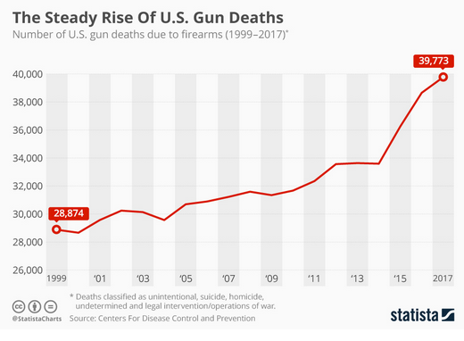

By Turrnut on April 7, 2025
Guns. The culprit behind 47,000 deaths per year in the United States, the topic of disagreement at political debates; and the reason that people are afraid to go out onto the streets at night. There is no doubt that guns have permeated through American culture. However, guns are unquestionably a topic of disagreement among Americans. While some believe that there should be more laws enacted to control and regulate it, others consider such laws too restrictive. The laws regarding gun control at the federal level are very limited, which leaves the decision of whether to enact these laws or not to the discretion of the states. Proponents of gun control laws pointed out that guns contribute significantly to violence, death, and crimes in the country; while the opponents emphasized the right granted to them by the Second Amendment, and their fear of losing that right.
Nevertheless, despite claims that gun control laws would take away rights granted by the Second Amendment, evidence suggests that enacting more of these laws is more compelling because such laws make public places safer, help reduce gun-related violence and crime, and make law enforcement easier. There is a need for more gun control, regardless of the type of the law or the state.
One of the main ways to regulate firearms is to require background checks at the time of purchase. Though requiring universal background checks when purchasing firearms allows less freedom, such measures help reduce gun violence by making sure that they don’t fall into the wrong hands. By considering factors such as criminal history, mental health, and substance abuse, background checks prevent firearms being owned by criminals. For example, on April 20, 1999, a mass shooting happened at Columbine High School, Colorado. The shooters were too young to obtain guns legally, so they acquired them illegally at a gun show because background checks weren’t required. Currently, even though no federal law requires such background checks, 22 states and the District of Columbia have already adopted this policy, which means that it is feasible. Therefore, Universal Background checks should be implemented at the federal level. The policy would reduce suicide and accidents, preventing, for example, the sale of guns to people with mental health issues. Universal background checks significantly hinder illegal gun trade, eliminating many loopholes, which are used by vendors at gun shows to sell guns illegally.
In addition to universal background checks, a different approach to regulate firearms is to require a license for concealed carry, which is when a person carries a hidden firearm in public. Much like universal background checks, requiring permits for concealed carry is not implemented at the federal level but is required in 21 states and the District of Columbia. For example, in Pennsylvania, “A person who is 21 years of age or older may apply for a License to Carry Firearms. The license allows individuals to carry a firearm concealed on their body or in a vehicle.” In contrast, in states with very loose gun control laws, a gun owner can carry their gun, hidden, into public spaces or stores without obtaining a permit, which led to a rise in gun-related deaths and made public spaces less safe. For instance, Texas, a state that has been loosening their gun control laws since 2000, is seeing unprecedented death rates. According to researchers from Stanford University, the University of California at Berkeley and Columbia University, they associated these loose laws with “13% to 15% higher violent crime rate 10 years after adoption.”. Requiring a permit for concealed carry is beneficial in improving public safety due to the steps required to obtain the permit. To get a concealed carry permit, a gun owner needs to go through training and education, which would reduce the risk of gun accidents. Additionally, school shooting perpetrators usually have their firearms concealed, and as the permits make verification of whether an individual is legally possessing a firearm possible, requiring permits makes law enforcement easier. Therefore, concealed carry should require a permit, otherwise it would be unquestionably dangerous to go out in public locations.
Beyond background checks and concealed carry permits, Extreme Risk Protection Orders—also known as the red flag laws—is another way to reduce the risk that guns bring. According to John Hopkins University’s Center for Gun Violence Solutions, it is defined as:
“…a civil court order that temporarily restricts firearm access for an individual who is behaving dangerously or presents a high risk of harm to self or others. By authorizing the temporary removal of firearms and prohibiting the individual from purchasing, possessing, or accessing firearms while the order is in effect, ERPOs provide a critical opportunity to intervene to prevent gun violence, including mass violence, homicide, and suicide”.
In other words, such laws would allow state courts to seize firearms from gun owners deemed to be able to present a danger, whether it is to themselves or others. These laws should be enacted for a variety of reasons. Firstly, these laws help avert crises. For example, this law authorises the removal of firearms from potential perpetrators, suicides, and people who have mental health issues. By removing guns from these demographics, red flag laws can enhance public safety and reduces suicide rates. Similar to universal background checks or concealed carry laws, red flag laws are not specified at the national level, but 21 states and DC have implemented these laws, indicating that they are practical to implement.
Although proponents for less gun control laws claim that passing gun control laws infringes upon the constitutional rights granted by the Second Amendment, in reality, enactment of such laws do not conflict with these rights. People can still continue to own guns, but just with additional restrictions to prevent negative consequences such as domestic violence or school shootings. Critics often emphasize the importance of owning firearms without considering the significance of ensuring public safety. According to statistics, gun deaths are on the rise in the United States, and action needs to be taken more than ever. Some scholars, such as Duke University law professors Joseph Blocher and Darrel A. H. Miller, believe that “The [Second] Amendment does not reach, let alone prohibit, all direct burdens imposed by gun control.” All things considered, in spite of claims that gun control laws would take away rights granted by the Second Amendment, evidence suggests that the public safety benefits of enacting these laws far outweigh the potential restrictions brought. In recent years, gun deaths are on the rise in the United States, and now changing the existing gun laws have never been more urgent. Nowadays, the gun debate is often presented as a disagreement with only two sides: as if there only are constitutional rights on one side and extremely restrictive gun control laws on the other. However, there are measures that can be taken to ensure improved public safety, measures that do not infringe upon anyone’s rights. Balancing these two isn’t only possible, but also necessary for a better future.